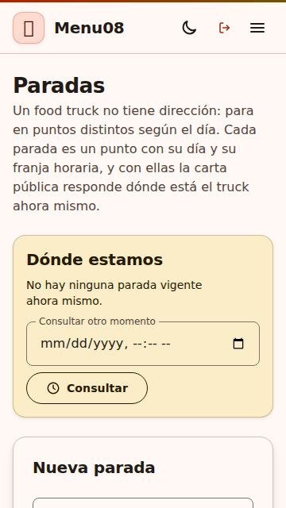
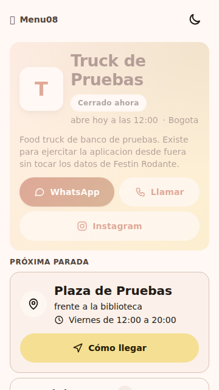
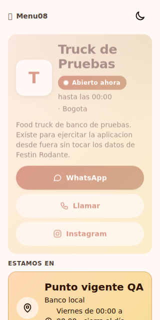
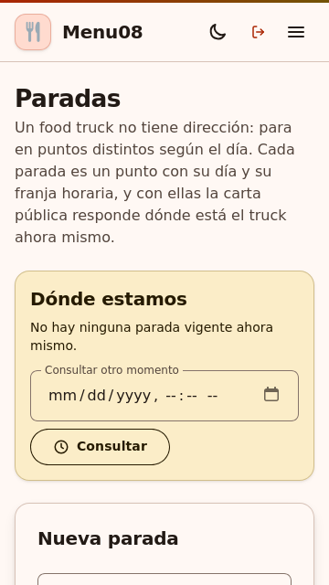
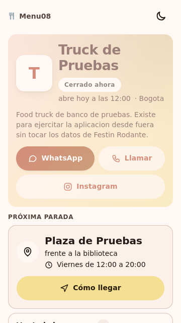
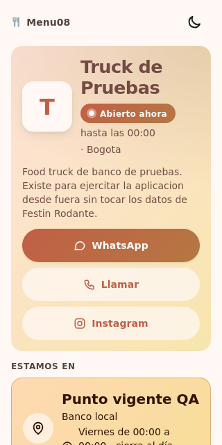

Commit: df7dab87540d2d488e85221ada8cdc7304a9de2d
Fecha UTC: 2026-10-16T11:12:11.131141+00:00
Ejecuciones: EX-086, EX-099
Fuente: repositorio Menu08 y respuestas reales de las herramientas. Este informe es una representación de los registros; las capturas de aplicación aparecen al final.
Resultado esperado del caso
El panel agrupa por día y valida los campos antes de enviar. La carta encabeza con punto, referencia y horario de la vigente; cuando no hay vigente, anuncia la siguiente programada y mantiene el resto de la semana de forma resumida. Las inactivas no aparecen. El bloque no desplaza horizontalmente el documento a 320 px.
Comparaciones ejecutadas
| Comprobación | Esperado | Obtenido | Resultado |
|---|
| Días agrupados | true | true | Cumple |
| Siguiente programada | true | true | Cumple |
| Agenda resumida | 1 | 1 | Cumple |
| Inactiva oculta | false | false | Cumple |
| Punto vigente | Punto vigente QA | Punto vigente QA | Cumple |
| Abierto | true | true | Cumple |
| Sin desborde bloque | true | true | Cumple |
| Días agrupados | true | true | Cumple |
| Siguiente programada | true | true | Cumple |
| Agenda resumida | 1 | 1 | Cumple |
| Inactiva oculta | false | false | Cumple |
| Punto vigente | Punto vigente QA | Punto vigente QA | Cumple |
| Abierto | true | true | Cumple |
| Sin desborde bloque | true | true | Cumple |
Notas de ejecución
- Navegador real automatizado en Linux; no equivale a un dispositivo Android físico.
- Días DOM: ['Lunes', 'Miércoles', 'Viernes', 'Sábado']
Abrir registro JSON con respuestas HTTP y comprobaciones completas
Capturas originales de aplicación
CP-CARTA-34-chromium-agenda.png

CP-CARTA-34-chromium-siguiente.png

CP-CARTA-34-chromium-vigente-320.png

CP-CARTA-34-firefox-agenda.png

CP-CARTA-34-firefox-siguiente.png

CP-CARTA-34-firefox-vigente-320.png
